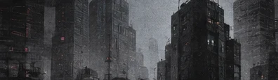
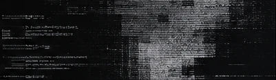

ARCHIVED EXPERIMENT / 2023
6h05t
Our fight is binary. Our future is not.
An experimental fiction and worldbuilding project exploring identity, surveillance, and digital resistance.
6h05t combines serialized fiction, narrative prototyping, generative AI collaboration, onchain personas, and networked performance to imagine a future where art and resistance converge.

The Society
A 16-chapter serialized story following Charles, a digital artist who leads a covert group of dissidents under the alias Jxsper.
The Last Stand
An unpublished novel concept about the Sentinels, the Remnants, and the last network beyond centralized control.

Process
Development notes, AI collaboration, character origins, and the evolution of 6h05t from concept to published fiction.
Origin path
- Unofficial PunksOnchain characters
- NotionNarrative systems
- Creative BytesSerialized releases
- 6h05t.netThe archive
The Society
An artist's anonymous identity becomes the unlikely leader of a digital resistance movement.
Originally released through the Creative Bytes newsletter, The Society follows Charles, a digital artist who operates under the pseudonym Jxsper. As his voice gains influence, the growing x5 Society forces him to confront identity, authorship, surveillance, and the cost of resistance.
Start with Chapter 1The Last Stand
A struggle over the last free network in a world transformed by technology.
An exploratory four-act novel outline set in a future where human–computer hybrids known as the Remnants seek control. Alex and the Sentinels fight to protect 6h05t.net, a decentralized mesh network, while personal loyalties threaten to reshape their resistance.
This is preserved as developmental material, not presented as a completed or published novel. Its relationship to The Society reflects shared ideas and worldbuilding rather than a confirmed story chronology.
- ACT 01Setup
The Remnants attack the network; Zoe is captured.
- ACT 02Complications
The Sentinels face infiltration, betrayal, and mounting losses.
- ACT 03Confrontation
Alex attempts a rescue and challenges the Remnants.
- ACT 04Resolution
The network survives, but its future remains uncertain.
Process
The fiction was one output. The experiment was the process of building it.
The project developed through iterative dialogue with generative AI, narrative prototyping, character studies, and fictional world logic. Symbolic characters from Unofficial Punks informed the Sentinels and Remnants, while publishing and social channels extended the work beyond the chapters.
The original development material includes character exploration, subplots, a four-act outline, setting details, and discussions about narrative point of view.
External archives may have changed or become unavailable over time.
About 6h05t
6h05t is an experimental fiction and worldbuilding project by Second Realm ↗. The published narrative was completed in 2023 and archived in 2025. The work explores the boundaries between human identity, digital systems, artistic expression, and resistance.
- CREATOR
- Second Realm / Eric Rhodes
- FORM
- Serialized fiction + creative archive
- STATUS
- Archived
- ORIGINAL RELEASE
- 2023
“You don't see us. But we see you.” — Jxsper